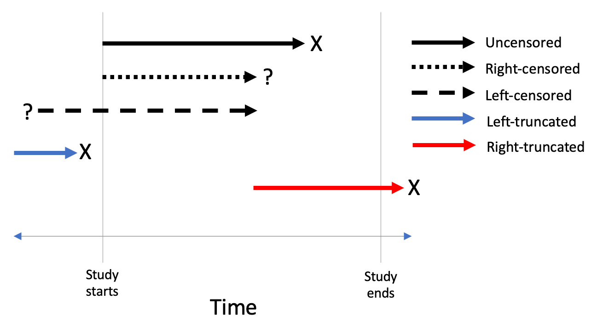
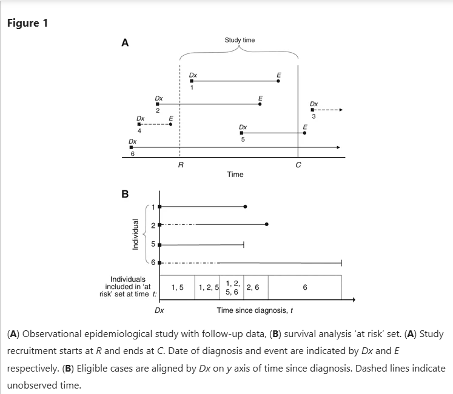
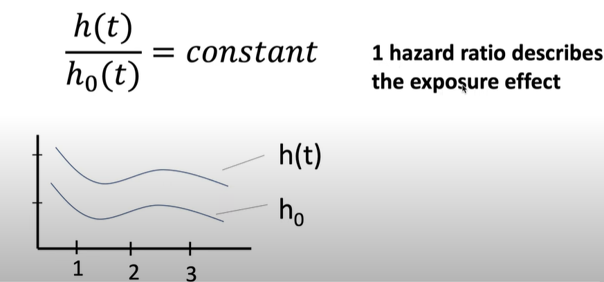
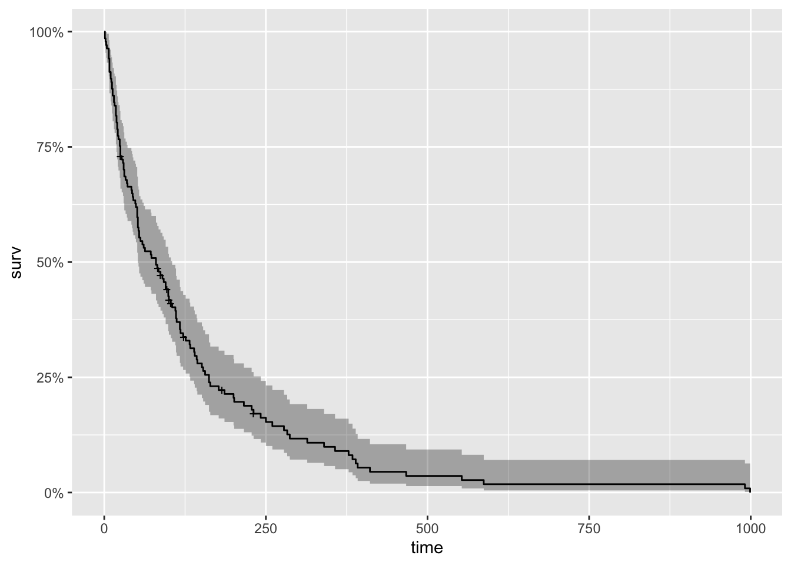
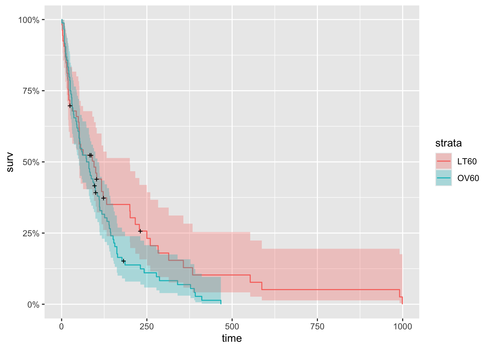
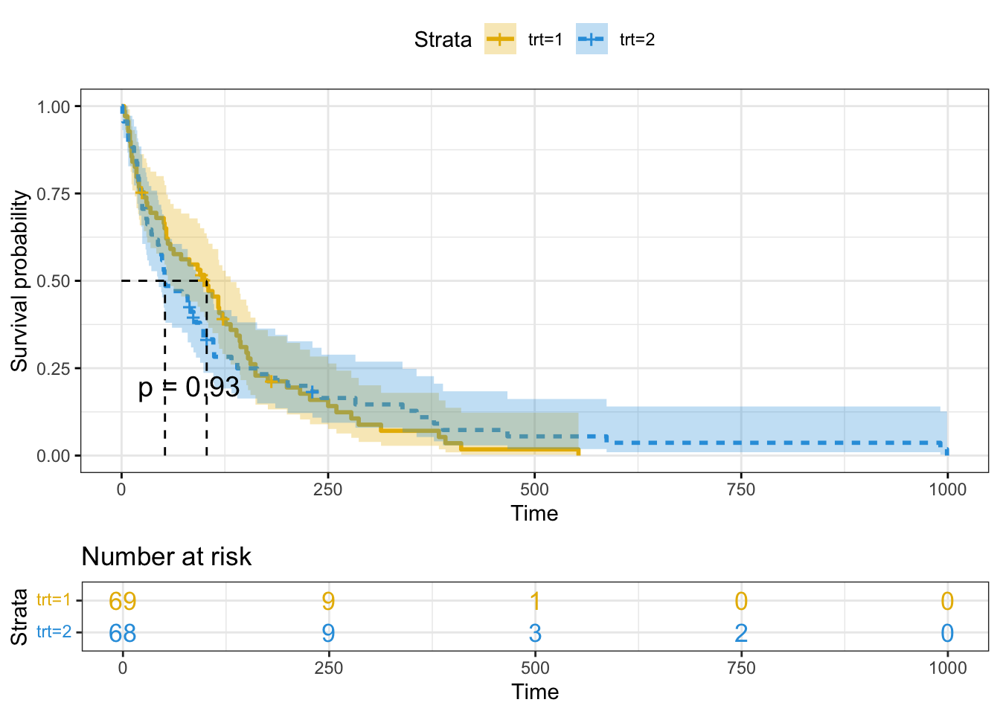
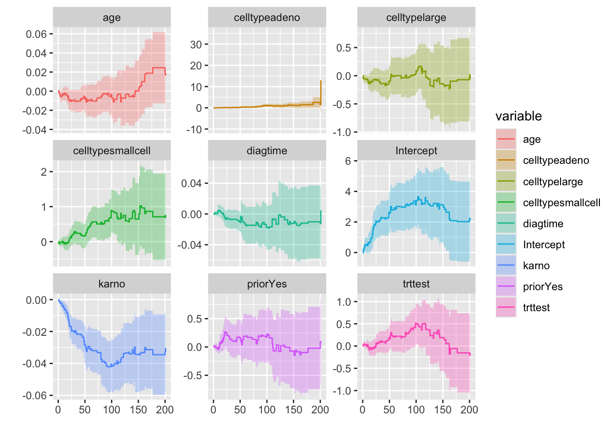

Attaching package: 'dplyr'The following objects are masked from 'package:stats':
filter, lagThe following objects are masked from 'package:base':
intersect, setdiff, setequal, unionSurvival analysis is a statistical method for analyzing survival data (longitudinal time to event data). Now, before discussing the statistical terms, lets think about what survives, and what does it mean by survival. The answer that comes to our mind is, it’s the living being that survives, and the survival time means life span such that time between ones’s birth to death. That’s true, survival analysis was originally used solely for investigations of mortality and morbidity on vital registration statistics. Xian Lui (2012) noted the history of arithmetic analysis of survival process can be traced back to the 17th century when English statistician John Graunt first published the life table in 1662. Since the outcome occurs over the course of time, the data should be longitudinal data.Since then the survival analysis was widely used in clinical trials.
Over the past 50 years, the literature notes the expanded applicability of survival analysis to the diverse fields like domain of biological science, biomedical science, engineering, and public health. Survival time therefore does not necessarily mean life span of living organisms, it can be start of drug to the first remission of the disease, diagnosis of the disease to the incidence of comorbidities, construction of a building to the collapse of the building, marriage to divorce, unemployment to the start of addiction drugs, occupational careers etc. In survival analysis the latter outcome is called an event, and the outcome of interest is the time to event.
1.Survival process: The primary feature of the survival data is the description of a change in status from specified original status as the underlying outcome measure. For example, start of cancer drug to remission of the cancer. The survival probability is the probability that an individual survives from the time origin (e.g., diagnosis of diabetes) to a specified future time t.
2.Time to event: It is calculated subtracting the specified starting time of the original status from the time of the occurrence of a particular event. It varies for different observations.
3.Censoring: Censoring is defined as assigning an specific value to any observation whose information on specified event/outcome is missing. Any study has a specified time or survival data generally are collected for a particular interval in which the occurrence of a particular event is observed. Researchers therefore can only observe those events that occur within a surveillance window between two-time limits. Many observations may not encounter the event in the given time frame, or some observations may get lost before the specified time. Such observations whose information on specified event are missing are censored which indicates that event did not occur for those observations in the given time. Censoring may occur for various reasons. In clinical trials, patients may be lost to follow-up due to migration or health problems, in longitudinal survey, some baseline respondents may lose interest in participating etc. Since censoring frequently occurs, most of the survival analysis literally deals with incomplete survival data, and accordingly scientists have found ways to use such limited information for correctly analyzing the incomplete survival data based on some restrictive assumptions on the distribution of censored survival times. Given the importance of handling censoring in survival analysis, a variety of censoring types are possible as below:
a)Right censoring: The observations that are lost to follow-up or that do not encounter event during the specified study period, the actual event for such observations is placed somewhere to the right of the censored time along the time axis. This type of censoring is called right censoring. This type of censoring occurs most frequently in survival data. The basic assumption of this type of censoring is that the individual’s censored time is independent of the actual survival time, thereby making right censoring non-informative.
b)Left censoring
c)Interval censoring


1) Kaplan-Meier (product limit)
The Kaplan–Meier (KM) method explores the survival of a population under investigation and/or tests differences in the crude cumulative survival between exposure groups, with a graphical representation of the endpoint occurrence as a function of time. It is a survival probability estimation method for non-parametric data. As events are assumed to occur independently of one another, the probabilities of surviving from one interval to the next may be multiplied together to give the cumulative survival probability. The KM survival curve, a plot of the KM survival probability against time, provides a useful summary of the data that can be used to estimate measures such as median survival time. The large skew encountered in the distribution of most survival data is the reason that the mean is not often used. It is called product limit approach because it estimates the survival probability each time an event occurs. (meaning it does not consider time as an interval/range (e.g., 5-10 years of age) but as a specific time (e.g., 5 years, 6 years, etc).
Important limitations of the KM method are
It does not provide an effect estimate (i.e., a relative risk) or the related confidence interval to compare the survival in different patient groups.
It does not permit the adjustment of confounders in etiological research or predictors in prognostic research.
It requires data categorization, so calculation of the incremental increase (or decrease) in the relative risk of a given event associated with one unit (or any number of units) increase in the candidate risk factor is not possible. These limitations can be approached by Cox regression analysis,
2) Log rank test
It is a method of comparing survival function among groups (non-parametric test). It test the following hypothesis;
Ho: In terms of survivability, there is no difference between two groups.
H1: There is a survival differential between the two groups.
We can reject the null hypothesis and infer that there is enough evidence to claim there is a difference in survival between the two groups if the p-value of the test is less than specified p-value which is generally 0.05 (95% confidence level).
3) Cox proportional hazard regression
The Cox model is a regression technique for performing survival analyses. This model estimates the hazard ratio (HR) of a given endpoint associated with a specific risk factor which can be continous or categorical variable. The hazard is the probability that an individual who is under observation at a time t has an event at that time. It represents the instantaneous event rate for an individual who has already survived to time t. The hazard function for a particular time interval gives the probability that the subject will fail in that interval, given that the subject has not failed up to that point in time. In regression models for survival analysis, we attempt to estimate parameters which describe the relationship between our predictors and the hazard rate. It is called the proportional hazards model because it assumes that the effects of different variables on survival are constant over time and additive over a particular scale. When the risk factor is a continuous variable, the Cox model provides the HR of the study endpoint associated with a predefined unit of increase in the independent variable and when the risk factor is categorical variable, the Cox model provides HR of one group compared to another reference group.
Mathematical equation for Cox model
Hazard equation
Hazard = Probability of the event happening at time t given it hasn’t happened up until time t
\[ H(t) = \frac{p(\text{Event} \in [t, t + \Delta t) | \text{Event} > t)}{\Delta t} \]
Cox Model Equation
\[ H(t) = H_0(t)\exp[B_1X_1 + B_2X_2 + ....B_kX_k] \]
Where
By computing the exponential of the regression coefficient \(B_1, \ldots, B_k\) (directly provided by the software), we can calculate the HR of a given risk factor or predictor in the model. For example, if the risk factor \(X_1\) is dichotomous and it is codified “1” if present (exposed) and “0” if absent (unexposed), the expression \(e^{B_i}\) (where exp = 2.7183) can be interpreted as the estimated increase in the HR of the event in patients with the risk factor compared to those without the same risk factor; this is applied by assuming exposed and unexposed patients are similar for all the other covariates included in the model. If the risk factor is a continuous variable and it is directly related to the incidence rate of a given event (e.g., age in years as a risk factor for mortality), the HR will be interpreted as an increase in the hazard rate of death due to a 1-year increase in age.
Assumption of Cox model
Hazard may fluctuate as a function of time, but the hazardous effects of different variables on survival are constant over time and additive over a particular scale.
\[ \frac{H(t)}{H_0} = \text{constant} \]
Where,
\(H(t)\) = Increased hazard as a result of exposure.
\(H_0\) = Baseline hazard in non-exposed

The packages required for conducting survival analysis can be installed automatically using the ctv packages. Following are the packages that will be functioning in this survival analysis project
survival The survival package is the cornerstone of the entire R survival analysis. Not only is the package itself rich in features, but the object created by the Surv() function, which contains failure time and censoring information, is the basic survival analysis data structure in R.
ggfortify ggfortify enables producing handsome, one-line survival plots with ggplot2::autoplot
This project uses the veterans dataset contained in the survival package. Veteran dataset contains data from a two-treatment, randomized trial for lung cancer. We load the data with required packages into our library as follows:
data(veteran)Warning in data(veteran): data set 'veteran' not foundhead(veteran) trt celltype time status karno diagtime age prior
1 1 squamous 72 1 60 7 69 0
2 1 squamous 411 1 70 5 64 10
3 1 squamous 228 1 60 3 38 0
4 1 squamous 126 1 60 9 63 10
5 1 squamous 118 1 70 11 65 10
6 1 squamous 10 1 20 5 49 0Veteran data contains following variables
trt: 1=standard 2=test
celltype: 1=squamous, 2=small cell, 3=adeno, 4=large
time: survival time in days after randomization
status: censoring status. 1 = dead, 0 = censored
karno: Karnofsky performance score (100=good). For proper pronounciation and meaning of this score click here
diagtime: months from diagnosis to randomization
age: in years
prior: prior therapy 0 = no, 1 = yes
We first need to use Surv() to build the standard survival object. Note: a “+” after the time in the print out of the output indicates censored observation.
[1] 72 411 228 126 118 10 82 110 314 100+ 42 8 144 25+ 11
[16] 30 384 4 54 13 123+ 97+ 153 59 117 16 151 22 56 21
[31] 18 139 20 31 52 287 18 51 122 27 54 7 63 392 10
[46] 8 92 35 117 132 12 162 3 95 177 162 216 553 278 12
[61] 260 200 156 182+ 143 105 103 250 100 999 112 87+ 231+ 242 991
[76] 111 1 587 389 33 Now to begin our analysis, we use the formula Surv() and the Surfit() function to produce the Kaplan-Meier estimates of the probability of survival over time. The times parameter of the summary() function gives some control over which times to print. Here, it is set to print the estimates for 1, 30, 60 and 90 days, and then every 90 days thereafter. This is the simplest possible model. It only takes three lines of R code to fit it, and produce numerical and graphical summaries.
km_fit <- survfit(Surv(time, status) ~ 1, data=veteran)
summary(km_fit, times = c(1,30,60,90*(1:10)))Call: survfit(formula = Surv(time, status) ~ 1, data = veteran)
time n.risk n.event survival std.err lower 95% CI upper 95% CI
1 137 2 0.985 0.0102 0.96552 1.0000
30 97 39 0.700 0.0392 0.62774 0.7816
60 73 22 0.538 0.0427 0.46070 0.6288
90 62 10 0.464 0.0428 0.38731 0.5560
180 27 30 0.222 0.0369 0.16066 0.3079
270 16 9 0.144 0.0319 0.09338 0.2223
360 10 6 0.090 0.0265 0.05061 0.1602
450 5 5 0.045 0.0194 0.01931 0.1049
540 4 1 0.036 0.0175 0.01389 0.0934
630 2 2 0.018 0.0126 0.00459 0.0707
720 2 0 0.018 0.0126 0.00459 0.0707
810 2 0 0.018 0.0126 0.00459 0.0707
900 2 0 0.018 0.0126 0.00459 0.0707#plot(km_fit, xlab="Days", main = 'Kaplan Meyer Plot') #base graphics is always ready
autoplot(km_fit)
Now to show one more small exploratory plot, we will create a new data frame to look at survival by age. First, we will create a new data frame with a categorical variable AG that has values LT60 and GT60, which respectively describe veterans younger and older than sixty. And we make trt and prior into factor variables.
vet <- mutate(
veteran,
AG = ifelse((age < 60), "LT60", "OV60"),
AG = factor(AG),
trt = factor(trt,labels=c("standard","test")),
prior = factor(prior,labels=c("N0","Yes"))
)
km_AG_fit <- survfit(Surv(time, status) ~ AG, data=vet)
autoplot(km_AG_fit)
Although the two curves appear to overlap in the first fifty days, younger patients clearly have a better chance of surviving more than a year.
Loading required package: ggpubr
Attaching package: 'survminer'The following object is masked from 'package:survival':
myelomaFirst lets look at the summary table of the survival curve
summary(km_trt_fit)$table records n.max n.start events rmean se(rmean) median 0.95LCL 0.95UCL
trt=1 69 69 69 64 123.9282 14.84352 103.0 59 132
trt=2 68 68 68 64 142.0613 26.81071 52.5 44 95Now for better visualization with p-value, we are using following plot
ggsurvplot(
km_trt_fit,
pval = TRUE, conf.int = TRUE,
risk.table = TRUE, # Add risk table
risk.table.col = "strata", # Change risk table color by groups
linetype = "strata", # Change line type by groups
surv.median.line = "hv", # Specify median survival
ggtheme = theme_bw(), # Change ggplot2 theme
palette = c("#E7B800", "#2E9FDF")
)Warning in geom_segment(aes(x = 0, y = max(y2), xend = max(x1), yend = max(y2)), : All aesthetics have length 1, but the data has 2 rows.
ℹ Please consider using `annotate()` or provide this layer with data containing
a single row.
All aesthetics have length 1, but the data has 2 rows.
ℹ Please consider using `annotate()` or provide this layer with data containing
a single row.
All aesthetics have length 1, but the data has 2 rows.
ℹ Please consider using `annotate()` or provide this layer with data containing
a single row.
All aesthetics have length 1, but the data has 2 rows.
ℹ Please consider using `annotate()` or provide this layer with data containing
a single row.
P-value is 0.93 which indicates that there is no significant difference between treatment 1 and 2 for survivability outcome.
The survival chance is 1.0 at time zero (or 100 percent of the participants are alive).
At time 250, the chances of survival for both trt=1 and tr2=2 are about 0.13 (or 13 percent).
The median survival time for trt=2 is about 60 days and for trt=1 is about 100 days, indicating that trt=1 has a better survival rate than trt=2, however the difference is not statistically significant
The following code shows how to perform a log-rank test to determine if there is a difference in survival between trt groups who received different treatments:
Call:
survdiff(formula = Surv(time, status) ~ trt, data = veteran)
N Observed Expected (O-E)^2/E (O-E)^2/V
trt=1 69 64 64.5 0.00388 0.00823
trt=2 68 64 63.5 0.00394 0.00823
Chisq= 0 on 1 degrees of freedom, p= 0.9 The Chi-Squared test statistic is 0 with 1 degree of freedom and the corresponding p-value is 0.9. Since this p-value is greater than 0.05, we cannot reject the null hypothesis.
In other words, we do not have sufficient evidence to say that there is a statistically significant difference in survival between the two treatment groups.
Now we will fit a Cox Proportional Hazards model that makes use of all of the covariates in the data set.
# Fit the Cox Model
cox <- coxph(
Surv(time, status) ~ trt + celltype + karno + diagtime + age + prior,
data = vet
)
summary(cox)Call:
coxph(formula = Surv(time, status) ~ trt + celltype + karno +
diagtime + age + prior, data = vet)
n= 137, number of events= 128
coef exp(coef) se(coef) z Pr(>|z|)
trttest 2.946e-01 1.343e+00 2.075e-01 1.419 0.15577
celltypesmallcell 8.616e-01 2.367e+00 2.753e-01 3.130 0.00175 **
celltypeadeno 1.196e+00 3.307e+00 3.009e-01 3.975 7.05e-05 ***
celltypelarge 4.013e-01 1.494e+00 2.827e-01 1.420 0.15574
karno -3.282e-02 9.677e-01 5.508e-03 -5.958 2.55e-09 ***
diagtime 8.132e-05 1.000e+00 9.136e-03 0.009 0.99290
age -8.706e-03 9.913e-01 9.300e-03 -0.936 0.34920
priorYes 7.159e-02 1.074e+00 2.323e-01 0.308 0.75794
---
Signif. codes: 0 '***' 0.001 '**' 0.01 '*' 0.05 '.' 0.1 ' ' 1
exp(coef) exp(-coef) lower .95 upper .95
trttest 1.3426 0.7448 0.8939 2.0166
celltypesmallcell 2.3669 0.4225 1.3799 4.0597
celltypeadeno 3.3071 0.3024 1.8336 5.9647
celltypelarge 1.4938 0.6695 0.8583 2.5996
karno 0.9677 1.0334 0.9573 0.9782
diagtime 1.0001 0.9999 0.9823 1.0182
age 0.9913 1.0087 0.9734 1.0096
priorYes 1.0742 0.9309 0.6813 1.6937
Concordance= 0.736 (se = 0.021 )
Likelihood ratio test= 62.1 on 8 df, p=2e-10
Wald test = 62.37 on 8 df, p=2e-10
Score (logrank) test = 66.74 on 8 df, p=2e-11Note that the model flags small cell type, adeno cell type and karno as significant. However, some caution needs to be exercised in interpreting these results. While the Cox Proportional Hazard’s model is thought to be “robust”, a careful analysis would check the assumptions underlying the model. For example, the Cox model assumes that the covariates do not vary with time. In a vignette that accompanies the Survival package Therneau, Crowson and Atkinson demonstrate that the Karnofsky score (karno) is, in fact, time-dependent so the assumptions for the Cox model are not met. The vignette authors have presented a strategy for dealing with time dependent covariates.
Data scientists who are accustomed to computing ROC curves to assess model performance should be interested in the Concordance statistic. The documentation for the survConcordance() function in the Survival package defines concordance as “the probability of agreement for any two randomly chosen observations, where in this case agreement means that the observation with the shorter survival time of the two also has the larger risk score. The predictor (or risk score) will often be the result of a Cox model or other regression” and notes that: “For continuous covariates concordance is equivalent to Kendall’s tau, and for logistic regression it is equivalent to the area under the ROC curve.”.
To demonstrate using the Survival package, along with ggplot2 and ggfortify, here we will fit Aalen’s additive regression model for censored data to the veteran data. To further understand AA regression please click here. The documentation states: The Aalen model assumes that the cumulative hazard H(t) for a subject can be expressed as
a(t) + X B(t), where
a(t) is a time-dependent intercept term, X is the vector of covariates for the subject (possibly time-dependent), and B(t) is a time-dependent matrix of coefficients.”
The plots show how the effects of the covariates change over time. We can see the steep slope and then abrupt change in slope of karno.
aa_fit <- aareg(
Surv(time, status) ~ trt + celltype + karno + diagtime + age + prior,
data = vet
)
aa_fitCall:
aareg(formula = Surv(time, status) ~ trt + celltype + karno +
diagtime + age + prior, data = vet)
n= 137
75 out of 97 unique event times used
slope coef se(coef) z p
Intercept 0.083400 3.81e-02 1.09e-02 3.490 4.79e-04
trttest 0.006730 2.49e-03 2.58e-03 0.967 3.34e-01
celltypesmallcell 0.015000 7.30e-03 3.38e-03 2.160 3.09e-02
celltypeadeno 0.018400 1.03e-02 4.20e-03 2.450 1.42e-02
celltypelarge -0.001090 -6.21e-04 2.71e-03 -0.229 8.19e-01
karno -0.001180 -4.37e-04 8.77e-05 -4.980 6.28e-07
diagtime -0.000243 -4.92e-05 1.64e-04 -0.300 7.65e-01
age -0.000246 -6.27e-05 1.28e-04 -0.491 6.23e-01
priorYes 0.003300 1.54e-03 2.86e-03 0.539 5.90e-01
Chisq=41.62 on 8 df, p=1.6e-06; test weights=aalen#summary(aa_fit) # provides a more complete summary of results
autoplot(aa_fit)
Looking at this plot we can see that only karno is the time dependent variable because the graph is steeply below 0. Now with this knowledge, we can re-fit our model.
Liu, X. (Xian X. ). (2012). Survival analysis models and applications. Wiley/Higher Education Press.